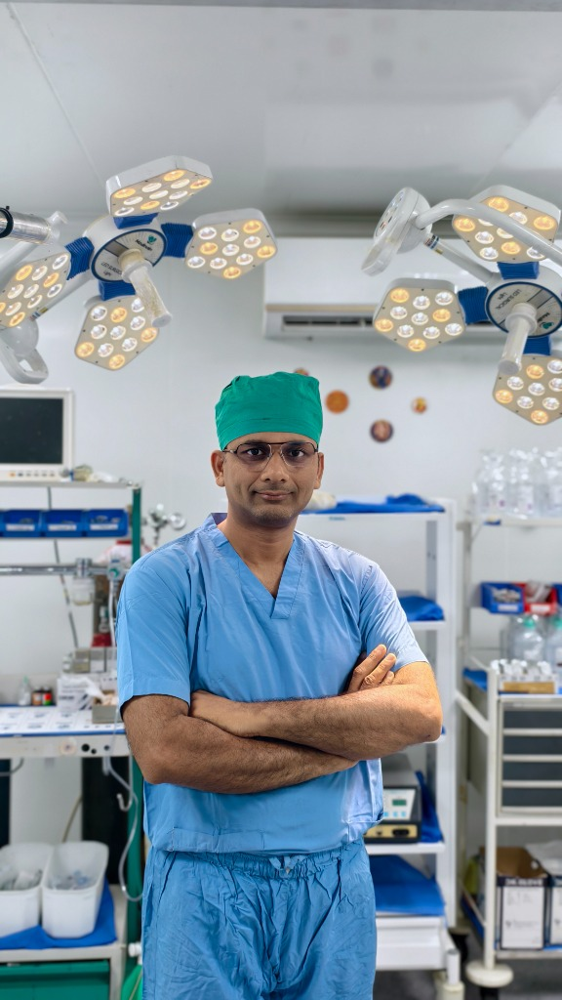

Meet Our Doctor
Expert care guided by decades of clinical excellence.

Dr. Balkrushna Mangukiya
M.S. (Orthopedic) — Gold Medalist
Joint Replacement & Arthroscopic Surgeon
With over 15 years of experience and 5,000+ successful procedures, Dr. Mangukiya is one of Surat's most trusted orthopedic surgeons. His dedication to patient care, combined with his expertise in minimally invasive techniques, ensures optimal outcomes and faster recovery.
Core Specializations
Joint Replacement
Advanced total and partial knee/hip arthroplasty using precision navigation techniques.
Arthroscopy
Minimally invasive keyhole surgery for sports injuries, ligament tears, and cartilage repair.
Complex Trauma
Expert management of severe fractures, non-unions, and poly-trauma reconstructive surgery.
Sports Medicine
Comprehensive care and rehabilitation strategies for athletic performance and recovery.